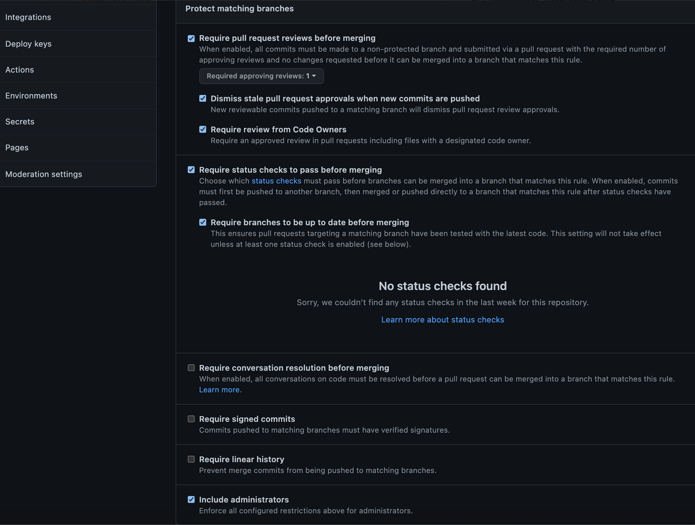

Code Review#
Take a moment to review the code provided by the ace-automation repository.
Lab1#
Review the terraform code for lab1:
lab1/main.tf- Deployment of Aviatrix Spoke Gateways via two invocations of the Aviatrix mc-spoke module.lab1/outputs.tf- Output the details of the spoke gateways for use in lab3.lab1/provider.tf- Configuration of the Aviatrix Terraform providerlab1/variables.tf- Input variables that are provided by the configuredTerraform HCLvariable setlab1/versions.tf- Backend configuration forTerraform HCLand version constraints for the Aviatrix provider andTerraform
Lab2#
Review the terraform code for lab2:
dcf/main.tf- Configuration for the Aviatrix Distributed Cloud Firewall (DCF)dcf/provider.tf- Configuration of the Aviatrix Terraform providerdcf/variables.tf- Input variables that are provided by the configuredTerraform HCLvariable setdcf/versions.tf- Backend configuration forTerraform HCLand version constraints for the Aviatrix provider andTerraform
Lab3#
Review the terraform code for lab3:
lab3/main.tf- Deployment of two Aviatrix Transit Gateways and their peering through invocation of the backbone module as well as spoke-transit attachments using theaviatrix_spoke_transit_attachmentresourcelab3/provider.tf- Configuration of the Aviatrix Terraform providerlab3/variables.tf- Input variables that are provided by the configuredTerraform HCLvariable setlab3/versions.tf- Backend configuration forTerraform HCLand version constraints for the Aviatrix provider andTerraform
Lab4#
[None]
GitHub Actions#
The configuration for GitHub Actions can be found under ace-automation > .github > workflows > terraform.yml
Review the comments for details of this configuration. Note that GitHub Actions will be triggered for changes inside the dcf folder only - on pushes to the main branch (merge) or pull requests (any branch).
When Actions are triggered for a pull request, a Terraform Plan will be executed its results written back to the PR itself.
When Actions are triggered for a push to main (merge) a Terraform Apply will be executed.
Codeowners and branch protections#
[!NOTE] This section describes
GitHubcode and configuration and is included for reference only. There is no action required.
The repository codeowners file and branch protections are the means by which you can enforce responsibility and collaboration between teams.
Consider the scenario for this lab. The development team for ACE, Inc is responsible for applications deployed in the organization. They are best positioned to understand the egress requirements of their applications. We’ll have them communicate those changes by modifying the code directly and creating a PR (more on that below). This will automatically trigger a review by the security team to ensure these changes meet corporate standards of appropriateness. Once the security team approves, the network team can now merge the PR and trigger a workflow that implements the change in the network itself. Communication, collaboration, and implementation are all codifed and enforced by the configuration of the repository.
Review the repository codeowners file located at ace-automation > .github > CODEOWNERS

Read the comments for an explanation of this file. We won’t be implementing these rules for this lab, but it’s important to understand the concept.
You can read more about the codeowners file by clicking this link.
Next, let’s take a look at branch protections and how they work in tandem with the codeowners file to codify responsibility and collaboration.
Go to your repository and click on Settings > Branches > Add branch protection rule
Set the Branch Name Pattern: main
[!WARNING] We won’t be implementing these for this course, this is just to understand the concept of codefying collaboration. Applying these settings will inhibit your ability to complete the labs.
If we were working on team, we would check the following 7 fields:
Require a pull request before merging
Require approvals
Dismiss stale pull request approvals when new commits are pushed
Require review from Code Owners
Require status checks to pass before merging
Require branches to be up to date before merging
Do not allow bypassing the above settings

With these protections in place no one person can makes changes to the network. Additionally, for any Terraform (*.tf) code, the Security team will also need to provide an approval to implement changes.